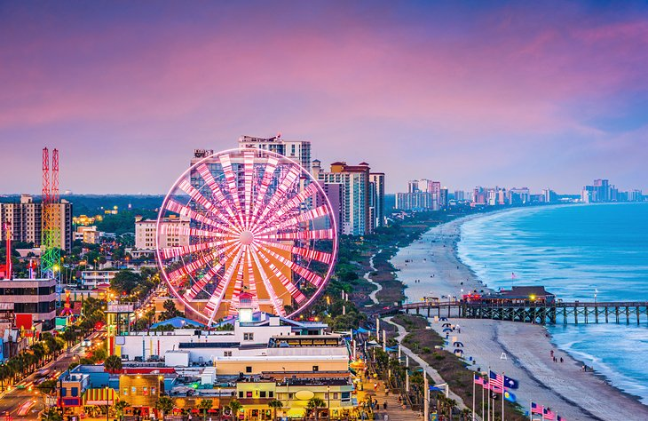

Day 1:- ARRIVE IN NEW YORK - TIMES SQUAREDay 1:- ARRIVE IN NEW YORK - TIMES SQUARE Arrive in New York at the New York airport; you will be met by your experienced and professional Tour Manager in the arrivals area, located outside the customs hall. Proceed to your hotel and check in. Tonight, after an Indian dinner, visit Times Square and be amazed by the life and lights of this mega city. Overnight in New York.
Meals: Dinner
Day 2:- NEW YORK - STATUE OF LIBERTY - EMPIRE STATE BUILDING
: After breakfast at the hotel, proceed on a boat cruise to the Statue of Liberty Island. Here admire the symbol of American freedom – The Statue of Liberty. After lunch, proceed on a city tour with an experienced local guide. Later, visit the Empire State Building and enjoy stunning views of the Manhattan Skyline from the 86th floor observatory. Later Enjoy Dinner at Indian restaurant later proceed to Magical Manhattan by night - Illumination Tour of Manhattan in Open Double Decker Bus - where you enter historic Brooklyn to view the glittering Manhattan Skyline - Enjoy nighttime views and ambiance of Times Square, Greenwich Village, Soho, Little Italy, Manhattan Bridge, Brooklyn Bridge and Lower East Side. Overnight in Hotel.Meals: Breakfast, Dinner
Day 3 :- NEW YORK –PHILADELPHIA – HERSHEY – DC
: After Breakfast at the hotel, check out and drive to Philadelphia Enjoy land & water sightseeing on a 90 minute duck tour where your captain will entertain with stories of past & present. Later Proceed to the town of Hershey – the sweetest place on earth. Indulge yourself in this sweet experience as you go on a chocolate making tour. After that proceed to Washington DC .overnight in Hotel.Meals: Breakfast, Dinner
Day 4 :- WASHINGTON DC – SMITHSONIAN – CITY TOUR (B, D)
: After Breakfast Enjoy some shopping time at Fashion center at Pentagon, Enjoy lunch on own at the mall which offers a great variety of International restaurants at the food court. Later proceed to visit Smithsonian Air & Space Museum truly a wondrous exhibit of air and space vehicles. This is the largest most modern exhibit in the world later enjoy DC guided City tour. Overnight at Hotel.Meals: Breakfast, Dinner
Day 5: WASHINGTON DC- CAPITOL HILL-NIAGARA FALLS
:After breakfast Enjoy a guided tour of Capitol Hill with a 13 minute film that takes you thru the country’s struggle to establish representative democracy. Later Proceed to Niagara Falls .Dinner at Indian Restaurant overnight at HotelMeals: Breakfast, Dinner